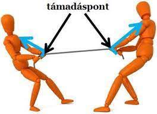
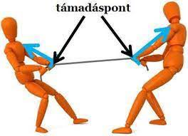

Dinamika Erőtan Bevezetés
Világunkban konkrétan mindenhol ott van valami matematikai vagy fizikai törvény, ha például arrébb huzunk egy széket, akkor surlódási erő keletkezik.
A "kimetika"nem a mozgás okait kutatja, hanem a mozgások pontos leírását vizsgálja.
A XVII-XVIII.században kibontakozó
 
